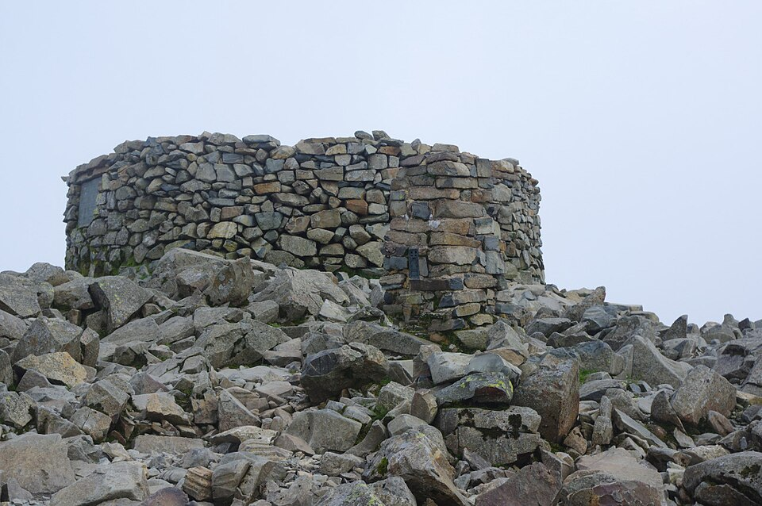
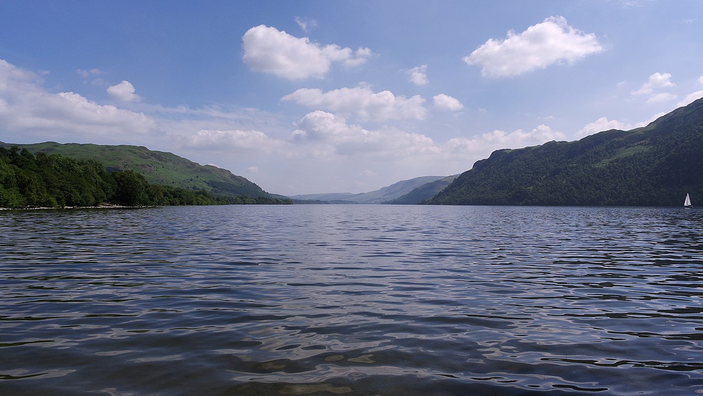
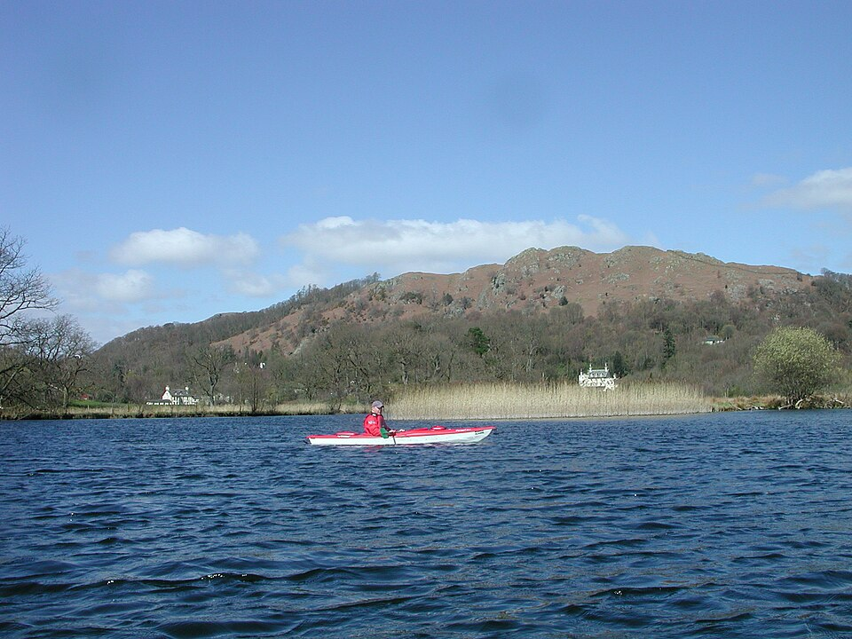
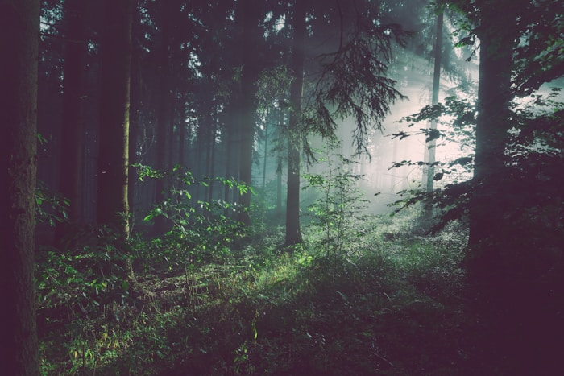
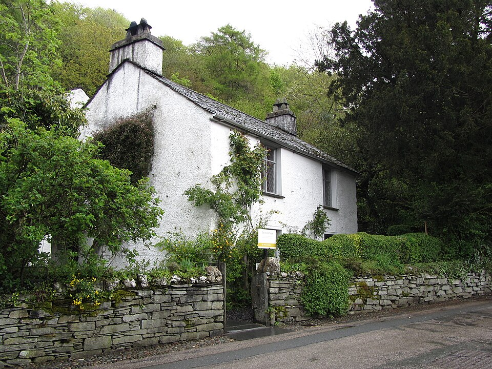
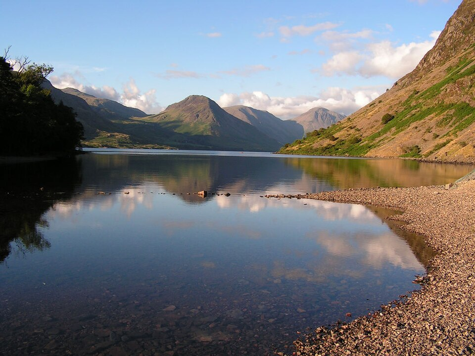
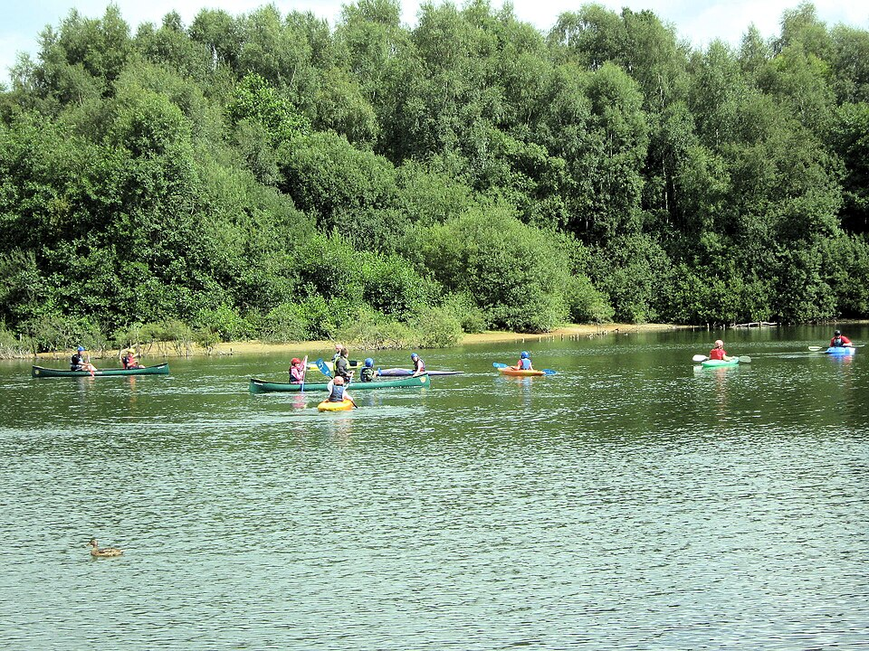
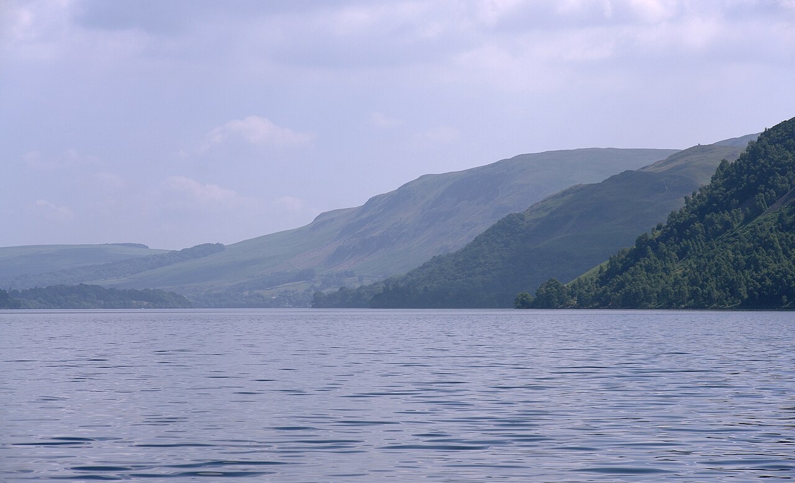

Experience the Lakes
Photo Credits
| Description | Photographer | Source |
|---|---|---|
| Windermere Panorama (Ambleside) | Diliff | Wikimedia Commons — CC BY-SA 3.0 |
| Scafell Pike Summit (978 m) | Geograph contributor | Wikimedia Commons — CC BY-SA 2.0 |
| Ullswater | Diliff | Wikimedia Commons — CC BY-SA 3.0 |
| Herdwick Sheep, Kirk Fell | Wikimedia Commons contributor | Wikimedia Commons — CC BY-SA 4.0 |
| Kayaking on Lake Windermere | Geograph contributor | Wikimedia Commons — CC BY-SA 2.0 |
| Whinlatter Forest — pine trees | Unsplash photographer | Unsplash Licence (free to use) |
| Dove Cottage, Grasmere | Wikimedia Commons contributor | Wikimedia Commons — CC BY-SA 3.0 |
| Wastwater — England's deepest lake | Geograph contributor | Wikimedia Commons — CC BY-SA 2.0 |
| Derwentwater, Keswick | Diliff | Wikimedia Commons — CC BY-SA 3.0 |
| Helvellyn — Striding Edge panorama | Wikimedia Commons contributor | Wikimedia Commons — CC BY-SA 3.0 |
| Group Kayaking, Lake District | ||
| Ullswater Valley |